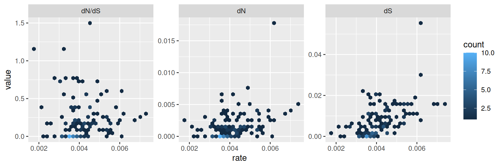
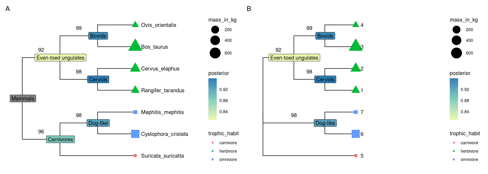
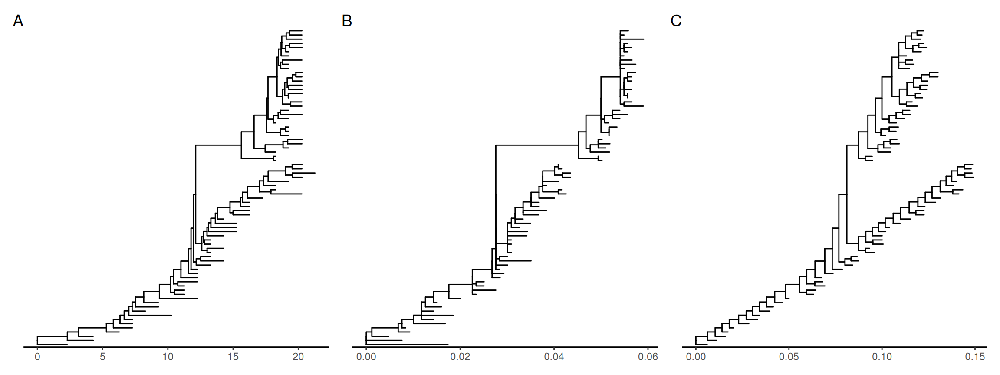
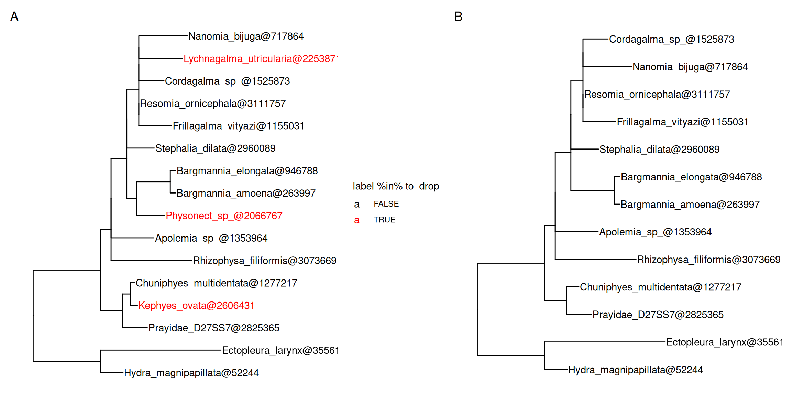
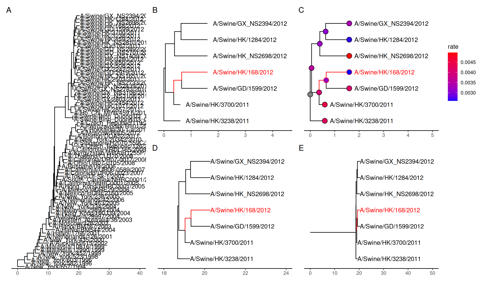
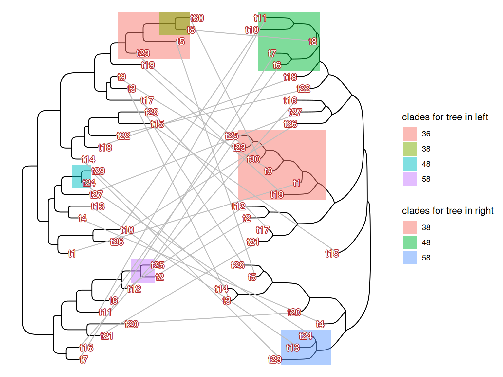
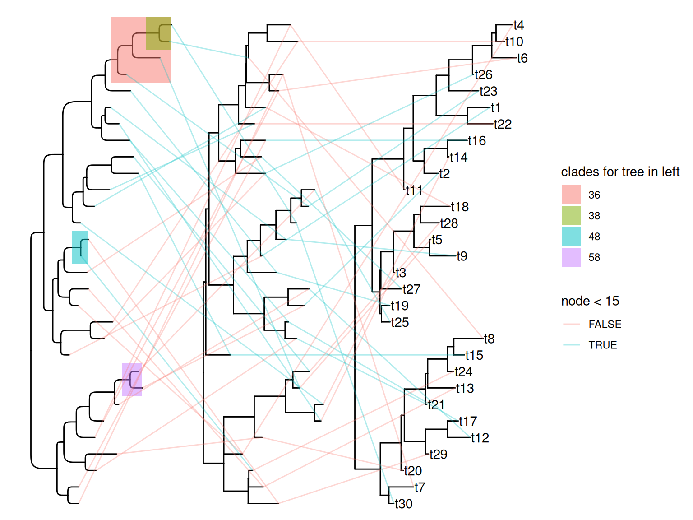

library(knitr)
opts_chunk$set(message=FALSE, warning=FALSE, eval=TRUE, echo=TRUE, cache=TRUE)
library(yulab.utils)
source("software-link.R")
library(ggplot2)2 Manipulating Tree with Data
library("ape")
library("tidytree")
library(treeio)options(show_data_for_treedata = FALSE)2.1 Manipulating Tree Data Using Tidy Interface
All the tree data parsed/merged by treeio (Wang et al., 2020) can be converted to a tidy data frame using the tidytree package. The tidytree package provides tidy interfaces to manipulate trees with associated data. For instance, external data can be linked to phylogeny or evolutionary data obtained from different sources can be merged using tidyverse verbs. After the tree data was processed, it can be converted back to a treedata object and exported to a single tree file, further analyzed in R or visualized using ggtree (Yu et al., 2017) and ggtreeExtra (Xu et al., 2021).
2.1.1 The phylo object
The phylo class defined in the ape package (Paradis et al., 2004) is fundamental for phylogenetic analysis in R. Most of the R packages in this field rely extensively on the phylo object. The tidytree package provides as_tibble method to convert the phylo object to a tidy data frame, a tbl_tree object.
library(ape)
set.seed(2017)
tree <- rtree(4)
tree
Phylogenetic tree with 4 tips and 3 internal nodes.
Tip labels:
t4, t1, t3, t2
Rooted; includes branch length(s).x <- as_tibble(tree)
x# A tbl_tree abstraction: 7 × 4
# which can be converted to treedata or phylo
# via as.treedata or as.phylo
parent node branch.length label
<int> <int> <dbl> <chr>
1 5 1 0.435 t4
2 7 2 0.674 t1
3 7 3 0.00202 t3
4 6 4 0.0251 t2
5 5 5 NA <NA>
6 5 6 0.472 <NA>
7 6 7 0.274 <NA> The tbl_tree object can be converted back to a phylo object using the as.phylo() method.
as.phylo(x)
Phylogenetic tree with 4 tips and 3 internal nodes.
Tip labels:
t4, t1, t3, t2
Rooted; includes branch length(s).Using tbl_tree object makes tree and data manipulation more effective and easier (see also the example in FAQ). For example, we can link evolutionary trait to phylogeny using the dplyr verbs full_join():
d <- tibble(label = paste0('t', 1:4),
trait = rnorm(4))
y <- full_join(x, d, by = 'label')
y# A tbl_tree abstraction: 7 × 5
# which can be converted to treedata or phylo
# via as.treedata or as.phylo
parent node branch.length label trait
<int> <int> <dbl> <chr> <dbl>
1 5 1 0.435 t4 0.943
2 7 2 0.674 t1 -0.171
3 7 3 0.00202 t3 0.570
4 6 4 0.0251 t2 -0.283
5 5 5 NA <NA> NA
6 5 6 0.472 <NA> NA
7 6 7 0.274 <NA> NA 2.1.2 The treedata object
The tidytree package defines treedata class to store a phylogenetic tree with associated data. After mapping external data to the tree structure, the tbl_tree object can be converted to a treedata object.
as.treedata(y)'treedata' S4 object'.
...@ phylo:
Phylogenetic tree with 4 tips and 3 internal nodes.
Tip labels:
t4, t1, t3, t2
Rooted; includes branch length(s).
with the following features available:
'trait'.The treedata class is used in the treeio package (Wang et al., 2020) to store evolutionary evidence inferred by commonly used software (BEAST, EPA, HyPhy, MrBayes, PAML, PHYLDOG, PPLACER, r8s, RAxML, and RevBayes, etc.) (see details in Chapter 1).
The tidytree package also provides the as_tibble() method to convert a treedata object to a tidy data frame. The phylogenetic tree structure and the evolutionary inferences were stored in the tbl_tree object, making it consistent and easier for manipulating evolutionary statistics inferred by different software as well as linking external data to the same tree structure.
y %>% as.treedata %>% as_tibble# A tbl_tree abstraction: 7 × 5
# which can be converted to treedata or phylo
# via as.treedata or as.phylo
parent node branch.length label trait
<int> <int> <dbl> <chr> <dbl>
1 5 1 0.435 t4 0.943
2 7 2 0.674 t1 -0.171
3 7 3 0.00202 t3 0.570
4 6 4 0.0251 t2 -0.283
5 5 5 NA <NA> NA
6 5 6 0.472 <NA> NA
7 6 7 0.274 <NA> NA 2.1.3 Access related nodes
The dplyr verbs can be applied to tbl_tree directly to manipulate tree data. In addition, tidytree provides several verbs to filter related nodes, including child(), parent(), offspring(), ancestor(), sibling() and MRCA().
These verbs accept a tbl_tree object and a selected node which can be node number or label.
child(y, 5)# A tibble: 2 × 5
parent node branch.length label trait
<int> <int> <dbl> <chr> <dbl>
1 5 1 0.435 t4 0.943
2 5 6 0.472 <NA> NA parent(y, 2)# A tibble: 1 × 5
parent node branch.length label trait
<int> <int> <dbl> <chr> <dbl>
1 6 7 0.274 <NA> NAoffspring(y, 5)# A tibble: 6 × 5
parent node branch.length label trait
<int> <int> <dbl> <chr> <dbl>
1 5 1 0.435 t4 0.943
2 7 2 0.674 t1 -0.171
3 7 3 0.00202 t3 0.570
4 6 4 0.0251 t2 -0.283
5 5 6 0.472 <NA> NA
6 6 7 0.274 <NA> NA ancestor(y, 2)# A tibble: 3 × 5
parent node branch.length label trait
<int> <int> <dbl> <chr> <dbl>
1 5 5 NA <NA> NA
2 5 6 0.472 <NA> NA
3 6 7 0.274 <NA> NAsibling(y, 2)# A tibble: 1 × 5
parent node branch.length label trait
<int> <int> <dbl> <chr> <dbl>
1 7 3 0.00202 t3 0.570MRCA(y, 2, 3)# A tibble: 1 × 5
parent node branch.length label trait
<int> <int> <dbl> <chr> <dbl>
1 6 7 0.274 <NA> NAAll these methods are also implemented in treeio for working with phylo and treedata objects. You can try accessing related nodes using the tree object. For instance, the following command will output child nodes of the selected internal node 5:
child(tree, 5)[1] 1 6Beware that the methods for tree objects output relevant node numbers, while the methods for tbl_tree object output a tibble object that contains related information.
2.2 Data Integration
2.2.1 Combining tree data
The treeio package (Wang et al., 2020) serves as an infrastructure that enables various types of phylogenetic data inferred from common analysis programs to be imported and used in R. For instance, dN/dS or ancestral sequences estimated by CODEML, and clade support values (posterior) inferred by BEAST/MrBayes. In addition, treeio supports linking external data to phylogeny. It brings these external phylogenetic data (either from software output or external sources) to the R community and makes it available for further analysis in R. Furthermore, treeio can combine multiple phylogenetic trees into one with their node/branch-specific attribute data. Essentially, as a result, one such attribute (e.g., substitution rate) can be mapped to another attribute (e.g., dN/dS) of the same node/branch for comparison and further computations (Yu et al., 2017; Yu et al., 2018).
A previously published dataset, seventy-six H3 hemagglutinin gene sequences of a lineage containing swine and human influenza A viruses (Liang et al., 2014), was used here to demonstrate the utilities of comparing evolutionary statistics inferred by different software. The dataset was re-analyzed by BEAST for timescale estimation and CODEML for synonymous and non-synonymous substitution estimation. In this example, we first parsed the outputs from BEAST using the read.beast() function and from CODEML using the read.codeml() function into two treedata objects. Then these two objects containing separate sets of node/branch-specific data were merged via the merge_tree() function.
beast_file <- system.file("examples/MCC_FluA_H3.tree", package="ggtree")
rst_file <- system.file("examples/rst", package="ggtree")
mlc_file <- system.file("examples/mlc", package="ggtree")
beast_tree <- read.beast(beast_file)
codeml_tree <- read.codeml(rst_file, mlc_file)
merged_tree <- merge_tree(beast_tree, codeml_tree)
merged_tree'treedata' S4 object that stored information
of
'/home/runner/work/_temp/Library/ggtree/examples/MCC_FluA_H3.tree',
'/home/runner/work/_temp/Library/ggtree/examples/rst',
'/home/runner/work/_temp/Library/ggtree/examples/mlc'.
...@ phylo:
Phylogenetic tree with 76 tips and 75 internal nodes.
Tip labels:
A/Hokkaido/30-1-a/2013, A/New_York/334/2004, A/New_York/463/2005,
A/New_York/452/1999, A/New_York/238/2005, A/New_York/523/1998, ...
Rooted; includes branch length(s).
with the following features available:
'height', 'height_0.95_HPD', 'height_median', 'height_range', 'length',
'length_0.95_HPD', 'length_median', 'length_range', 'posterior', 'rate',
'rate_0.95_HPD', 'rate_median', 'rate_range', 'subs', 'AA_subs', 't', 'N',
'S', 'dN_vs_dS', 'dN', 'dS', 'N_x_dN', 'S_x_dS'.After merging the beast_tree and codeml_tree objects, all node/branch-specific data imported from BEAST and CODEML output files are all available in the merged_tree object. The tree object was converted to a tidy data frame using the tidytree package and visualized as hexbin scatterplots of dN/dS, dN, and dS inferred by CODEML vs. rate (substitution rate in a unit of substitutions/site/year) inferred by BEAST on the same branches.
library(dplyr)
df <- merged_tree %>%
as_tibble() %>%
select(dN_vs_dS, dN, dS, rate) %>%
subset(dN_vs_dS >=0 & dN_vs_dS <= 1.5) %>%
tidyr::gather(type, value, dN_vs_dS:dS)
df$type[df$type == 'dN_vs_dS'] <- 'dN/dS'
df$type <- factor(df$type, levels=c("dN/dS", "dN", "dS"))
ggplot(df, aes(rate, value)) + geom_hex() +
facet_wrap(~type, scale='free_y') 
The output is illustrated in Figure ?fig-correlations. We can then test the association of these node/branch-specific data using Pearson correlation, which in this case showed that dN and dS, but not dN/dS are significantly (p-values) associated with rate.
Using the merge_tree() function, we are able to compare analysis results using an identical model from different software packages or different models using different or identical software. It also allows users to integrate different analysis findings from different software packages. Merging tree data is not restricted to software findings, associating external data to analysis findings is also granted. The merge_tree() function is chainable and allows several tree objects to be merged into one.
phylo <- as.phylo(beast_tree)
N <- Nnode2(phylo)
d <- tibble(node = 1:N, fake_trait = rnorm(N), another_trait = runif(N))
fake_tree <- treedata(phylo = phylo, data = d)
triple_tree <- merge_tree(merged_tree, fake_tree)
triple_tree'treedata' S4 object that stored information
of
'/home/runner/work/_temp/Library/ggtree/examples/MCC_FluA_H3.tree',
'/home/runner/work/_temp/Library/ggtree/examples/rst',
'/home/runner/work/_temp/Library/ggtree/examples/mlc'.
...@ phylo:
Phylogenetic tree with 76 tips and 75 internal nodes.
Tip labels:
A/Hokkaido/30-1-a/2013, A/New_York/334/2004, A/New_York/463/2005,
A/New_York/452/1999, A/New_York/238/2005, A/New_York/523/1998, ...
Rooted; includes branch length(s).
with the following features available:
'height', 'height_0.95_HPD', 'height_median', 'height_range', 'length',
'length_0.95_HPD', 'length_median', 'length_range', 'posterior', 'rate',
'rate_0.95_HPD', 'rate_median', 'rate_range', 'subs', 'AA_subs', 't', 'N',
'S', 'dN_vs_dS', 'dN', 'dS', 'N_x_dN', 'S_x_dS', 'fake_trait', 'another_trait'.The triple_tree object shown above contains analysis results obtained from BEAST and CODEML, and evolutionary traits from external sources. All these pieces of information can be used to annotate the tree using ggtree (Yu et al., 2017) and ggtreeExtra (Xu et al., 2021).
2.2.2 Linking external data to phylogeny
In addition to analysis findings that are associated with the tree as demonstrated above, there is a wide range of heterogeneous data, including phenotypic data, experimental data, and clinical data, etc., that need to be integrated and linked to phylogeny. For example, in the study of viral evolution, tree nodes may be associated with epidemiological information, such as location, age, and subtype. Functional annotations may need to be mapped onto gene trees for comparative genomics studies. To facilitate data integration, treeio provides full_join() methods to link external data to phylogeny and store it in either phylo or treedata object. Beware that linking external data to a phylo object will produce a treedata object to store the input phylo with associated data. The full_join methods can also be used at tidy data frame level (i.e., tbl_tree object described previously) and at ggtree level (described in Chapter 7) (Yu et al., 2018).
The following example calculated bootstrap values and merged those values with the tree (a phylo object) by matching their node numbers.
library(ape)
data(woodmouse)
d <- dist.dna(woodmouse)
tr <- nj(d)
bp <- boot.phylo(tr, woodmouse, function(x) nj(dist.dna(x)))
Running bootstraps: 100 / 100
Calculating bootstrap values... done.bp2 <- tibble(node=1:Nnode(tr) + Ntip(tr), bootstrap = bp)
full_join(tr, bp2, by="node")'treedata' S4 object'.
...@ phylo:
Phylogenetic tree with 15 tips and 13 internal nodes.
Tip labels:
No305, No304, No306, No0906S, No0908S, No0909S, ...
Unrooted; includes branch length(s).
with the following features available:
'', 'bootstrap'.Another example demonstrates merging evolutionary traits with the tree (a treedata object) by matching their tip labels.
file <- system.file("extdata/BEAST", "beast_mcc.tree", package="treeio")
beast <- read.beast(file)
x <- tibble(label = as.phylo(beast)$tip.label, trait = rnorm(Ntip(beast)))
full_join(beast, x, by="label")'treedata' S4 object that stored information
of
'/home/runner/work/_temp/Library/treeio/extdata/BEAST/beast_mcc.tree'.
...@ phylo:
Phylogenetic tree with 15 tips and 14 internal nodes.
Tip labels:
A_1995, B_1996, C_1995, D_1987, E_1996, F_1997, ...
Rooted; includes branch length(s).
with the following features available:
'height', 'height_0.95_HPD', 'height_median', 'height_range', 'length',
'length_0.95_HPD', 'length_median', 'length_range', 'posterior', 'rate',
'rate_0.95_HPD', 'rate_median', 'rate_range', 'trait'.Manipulating tree objects is frustrated with the fragmented functions available for working with phylo objects, not to mention linking external data to the phylogeny structure. With the treeio package (Wang et al., 2020), it is easy to combine tree data from various sources. In addition, with the tidytree package, manipulating trees is easier using the tidy data principles and consistent with tools already in wide use, including dplyr, tidyr, ggplot2, and ggtree (Yu et al., 2017).
2.2.3 Grouping taxa
The groupOTU() and groupClade() methods are designed for adding taxa grouping information to the input tree object. The methods were implemented in tidytree, treeio, and ggtree respectively to support adding grouping information for the tbl_tree, phylo and treedata, and ggtree objects. This grouping information can be used directly in tree visualization (e.g., coloring a tree based on grouping information) with ggtree (Figure ?fig-groupOTU).
2.2.3.1 groupClade
The groupClade() method accepts an internal node or a vector of internal nodes to add grouping information of selected clade/clades.
nwk <- '(((((((A:4,B:4):6,C:5):8,D:6):3,E:21):10,((F:4,G:12):14,H:8):13):
13,((I:5,J:2):30,(K:11,L:11):2):17):4,M:56);'
tree <- read.tree(text=nwk)
groupClade(as_tibble(tree), c(17, 21))# A tbl_tree abstraction: 25 × 5
# which can be converted to treedata or phylo
# via as.treedata or as.phylo
parent node branch.length label group
<int> <int> <dbl> <chr> <fct>
1 20 1 4 A 1
2 20 2 4 B 1
3 19 3 5 C 1
4 18 4 6 D 1
5 17 5 21 E 1
6 22 6 4 F 2
7 22 7 12 G 2
8 21 8 8 H 2
9 24 9 5 I 0
10 24 10 2 J 0
# ℹ 15 more rows2.2.3.2 groupOTU
set.seed(2017)
tr <- rtree(4)
x <- as_tibble(tr)
## the input nodes can be node ID or label
groupOTU(x, c('t1', 't4'), group_name = "fake_group")# A tbl_tree abstraction: 7 × 5
# which can be converted to treedata or phylo
# via as.treedata or as.phylo
parent node branch.length label fake_group
<int> <int> <dbl> <chr> <fct>
1 5 1 0.435 t4 1
2 7 2 0.674 t1 1
3 7 3 0.00202 t3 0
4 6 4 0.0251 t2 0
5 5 5 NA <NA> 1
6 5 6 0.472 <NA> 1
7 6 7 0.274 <NA> 1 Both groupClade() and groupOTU() work with the tbl_tree, phylo and treedata, and ggtree objects. Here is an example of using groupOTU() with a phylo tree object.
groupOTU(tr, c('t2', 't4'), group_name = "fake_group") %>%
as_tibble# A tbl_tree abstraction: 7 × 5
# which can be converted to treedata or phylo
# via as.treedata or as.phylo
parent node branch.length label fake_group
<int> <int> <dbl> <chr> <fct>
1 5 1 0.435 t4 1
2 7 2 0.674 t1 0
3 7 3 0.00202 t3 0
4 6 4 0.0251 t2 1
5 5 5 NA <NA> 1
6 5 6 0.472 <NA> 1
7 6 7 0.274 <NA> 0 Another example of working with the ggtree object can be found in session 6.4.
The groupOTU will trace back from input nodes to most recent common ancestor. In this example, nodes 1, 4, 5 and 6 are grouping together (4 (t2) -> 6 -> 5 and 1 (t4) -> 5).
Related operational taxonomic units (OTUs) are grouping and they are not necessarily within a clade. They can be monophyletic (clade), polyphyletic or paraphyletic.
cls <- list(c1=c("A", "B", "C", "D", "E"),
c2=c("F", "G", "H"),
c3=c("L", "K", "I", "J"),
c4="M")
as_tibble(tree) %>% groupOTU(cls)# A tbl_tree abstraction: 25 × 5
# which can be converted to treedata or phylo
# via as.treedata or as.phylo
parent node branch.length label group
<int> <int> <dbl> <chr> <fct>
1 20 1 4 A c1
2 20 2 4 B c1
3 19 3 5 C c1
4 18 4 6 D c1
5 17 5 21 E c1
6 22 6 4 F c2
7 22 7 12 G c2
8 21 8 8 H c2
9 24 9 5 I c3
10 24 10 2 J c3
# ℹ 15 more rowsIf there are conflicts when tracing back to the most recent common ancestor, users can set overlap parameter to “origin” (the first one counts), “overwrite” (default, the last one counts), or “abandon” (un-selected for grouping)1.
2.3 Rerooting tree
A phylogenetic tree can be rerooted with a specified outgroup. The ape package implements a root() method to reroot a tree stored in a phylo object, while the treeio package provides the root() method for treedata object. This method is designed to re-root a phylogenetic tree with associated data concerning the specified outgroup or at the specified node based on the root() implemented in the ape package.
We first linked external data to a tree using left_join() and stored all the information in a treedata object, trda.
library(ggtree)
library(treeio)
library(tidytree)
library(TDbook)
# load `tree_boots`, `df_tip_data`, and `df_inode_data` from 'TDbook'
trda <- tree_boots %>%
left_join(df_tip_data, by=c("label" = "Newick_label")) %>%
left_join(df_inode_data, by=c("label" = "newick_label"))
trda'treedata' S4 object'.
...@ phylo:
Phylogenetic tree with 7 tips and 6 internal nodes.
Tip labels:
Rangifer_tarandus, Cervus_elaphus, Bos_taurus, Ovis_orientalis,
Suricata_suricatta, Cystophora_cristata, ...
Node labels:
Mammalia, Artiodactyla, Cervidae, Bovidae, Carnivora, Caniformia
Rooted; includes branch length(s).
with the following features available:
'', 'vernacularName', 'imageURL', 'imageLicense', 'imageAuthor', 'infoURL',
'mass_in_kg', 'trophic_habit', 'ncbi_taxid', 'rank', 'vernacularName.y',
'infoURL.y', 'rank.y', 'bootstrap', 'posterior'.Then we can reroot the tree with the associated data mapping to the branches and nodes correctly as demonstrated in Figure ?fig-reroot. The figure was visualized using ggtree (see also Chapters 4 and 5).
# reroot
trda2 <- root(trda, outgroup = "Suricata_suricatta", edgelabel = TRUE)
# The original tree
p1 <- trda %>%
ggtree() +
geom_nodelab(
mapping = aes(
x = branch,
label = bootstrap
),
nudge_y = 0.36
) +
xlim(-.1, 4.5) +
geom_tippoint(
mapping = aes(
shape = trophic_habit,
color = trophic_habit,
size = mass_in_kg
)
) +
scale_size_continuous(range = c(3, 10)) +
geom_tiplab(
offset = .14,
) +
geom_nodelab(
mapping = aes(
label = vernacularName.y,
fill = posterior
),
geom = "label"
) +
scale_fill_gradientn(colors = RColorBrewer::brewer.pal(3, "YlGnBu")) +
theme(legend.position = "right")
# after reroot
p2 <- trda2 %>%
ggtree() +
geom_nodelab(
mapping = aes(
x = branch,
label = bootstrap
),
nudge_y = 0.36
) +
xlim(-.1, 5.5) +
geom_tippoint(
mapping = aes(
shape = trophic_habit,
color = trophic_habit,
size = mass_in_kg
)
) +
scale_size_continuous(range = c(3, 10)) +
geom_tiplab(
offset = .14,
) +
geom_nodelab(
mapping = aes(
label = vernacularName.y,
fill = posterior
),
geom = "label"
) +
scale_fill_gradientn(colors = RColorBrewer::brewer.pal(3, "YlGnBu")) +
theme(legend.position = "right")
plot_list(p1, p2, tag_levels='A', ncol=2)
The outgroup parameter represents the specific new outgroup, it can be a node label (character) or node number. If it is a “single one” value, meaning using the node below this tip as the new root, if it has multiple values, meaning the most recent common of the values will be used as the new root. Note that, if the node labels should be treated as edge labels, the edgelabel should be set to TRUE to return the correct relationship between the node and associated data. For more details about re-root, including precautions and pitfalls, please refer to the review article (Czech et al., 2017).
2.4 Rescaling Tree Branches
Phylogenetic data can be merged for joint analysis (Figure ?fig-correlations). They can be displayed on the same tree structure as a more complex annotation to help visually inspection of their evolutionary patterns. All the numerical data stored in a treedata object can be used to re-scale tree branches. For example, CodeML infers dN/dS, dN, and dS, all these statistics can be used as branch lengths (Figure ?fig-rescale). All these values can also be used to color the tree (session 4.3.4) and can be projected to a vertical dimension to create a two-dimensional tree or phenogram (session 4.2.2 and Figures ?fig-2d and ?fig-continuousColor).
p1 <- ggtree(merged_tree) + theme_tree2()
p2 <- ggtree(rescale_tree(merged_tree, 'dN')) + theme_tree2()
p3 <- ggtree(rescale_tree(merged_tree, 'rate')) + theme_tree2()
plot_list(p1, p2, p3, ncol=3, tag_levels='A')
Modifying branch lengths in the tree object in addtion to using the rescale_tree() function, users can directly specify a variable as branch length in ggtree() as demonstrated in session 4.3.6.
2.5 Subsetting Tree with Data
2.5.1 Removing tips in a phylogenetic tree
Sometimes we want to remove selected tips from a phylogenetic tree. This is due to several reasons, including low sequence quality, errors in sequence assembly, an alignment error in part of the sequence, an error in phylogenetic inference, etc.
Let’s say that we want to remove three tips (colored red) from the tree (Figure ?fig-removeTipA), the drop.tip() method removes specified tips and updates the tree (Figure ?fig-removeTipB). All associated data will be maintained in the updated tree.
f <- system.file("extdata/NHX", "phyldog.nhx", package="treeio")
nhx <- read.nhx(f)
to_drop <- c("Physonect_sp_@2066767",
"Lychnagalma_utricularia@2253871",
"Kephyes_ovata@2606431")
p1 <- ggtree(nhx) + geom_tiplab(aes(color = label %in% to_drop)) +
scale_color_manual(values=c("black", "red")) + xlim(0, 0.8)
nhx_reduced <- drop.tip(nhx, to_drop)
p2 <- ggtree(nhx_reduced) + geom_tiplab() + xlim(0, 0.8)
plot_list(p1, p2, ncol=2, tag_levels = "A")
2.5.2 Subsetting tree by tip label
Sometimes a tree can be large and difficult to look at only the portions of interest. The tree_subset() function was created in the treeio package (Wang et al., 2020) to extract a subset of the tree portion while still maintaining the structure of the tree portion. The beast_tree in Figure ?fig-subsetTipA is slightly crowded. Obviously, we can make the figure taller to allow more space for the labels (similar to using the “Expansion” slider in FigTree) or we can make the text smaller. However, these solutions are not always applicable when you have a lot of tips (e.g., hundreds or thousands of tips). In particular, when you are only interested in the portion of the tree around a particular tip, you certainly don’t want to explore a large tree to find the certain species you are interested in.
Let’s say you are interested in tip A/Swine/HK/168/2012 from the tree (Figure ?fig-subsetTipA) and you want to look at the immediate relatives of this tip.
The tree_subset() function allows you to look at the portions of the tree that are of interest. By default, the tree_subset() function will internally call the groupOTU() to assign the group specified tip from the rest of the other tips (Figure ?fig-subsetTipB). Additionally, the branch lengths and related associated data are maintained after subsetting (Figure ?fig-subsetTipC). The root of the tree is always anchored at zero for the subset tree by default and all the distances are relative to this root. If you want all the distances to be relative to the original root, you can specify the root position (by root.position parameter) to the root edge of the subset tree, which is the sum of branch lengths from the original root to the root of the subset tree (Figures ?fig-subsetTipD and E).
beast_file <- system.file("examples/MCC_FluA_H3.tree", package="ggtree")
beast_tree <- read.beast(beast_file)
p1 = ggtree(beast_tree) +
geom_tiplab(offset=.05) + xlim(0, 40) + theme_tree2()
tree2 = tree_subset(beast_tree, "A/Swine/HK/168/2012", levels_back=4)
p2 <- ggtree(tree2, aes(color=group)) +
scale_color_manual(values = c("black", "red"), guide = 'none') +
geom_tiplab(offset=.2) + xlim(0, 4.5) + theme_tree2()
p3 <- p2 +
geom_point(aes(fill = rate), shape = 21, size = 4) +
scale_fill_continuous(low = 'blue', high = 'red') +
xlim(0,5) + theme(legend.position = 'right')
p4 <- ggtree(tree2, aes(color=group),
root.position = as.phylo(tree2)$root.edge) +
geom_tiplab() + xlim(18, 24) +
scale_color_manual(values = c("black", "red"), guide = 'none') +
theme_tree2()
p5 <- p4 +
geom_rootedge() + xlim(0, 50)
plot_list(p1, p2, p3, p4, p5,
design="AABBCC\nAADDEE", tag_levels='A')
2.5.3 Subsetting tree by internal node number
If you are interested in a certain clade, you can specify the input node as an internal node number. The tree_subset() function will take the clade as a whole and also trace it back to particular levels to look at the immediate relatives of the clade (Figures ?fig-subsetNodeA and B). We can use the tree_subset() function to zoom in selected portions and plot a whole tree with the portion of it, which is similar to the ape::zoom() function to explore a very large tree (Figures ?fig-subsetNodeC and D). Users can also use viewClade() function to restrict tree visualization at specific clade as demonstrated in session 6.1.
clade <- tree_subset(beast_tree, node=121, levels_back=0)
clade2 <- tree_subset(beast_tree, node=121, levels_back=2)
p1 <- ggtree(clade) + geom_tiplab() + xlim(0, 5)
p2 <- ggtree(clade2, aes(color=group)) + geom_tiplab() +
xlim(0, 9) + scale_color_manual(values=c("black", "red"))
library(ape)
library(tidytree)
library(treeio)
data(chiroptera)
nodes <- grep("Plecotus", chiroptera$tip.label)
chiroptera <- groupOTU(chiroptera, nodes)
clade <- MRCA(chiroptera, nodes)
x <- tree_subset(chiroptera, clade, levels_back = 0)
p3 <- ggtree(chiroptera, aes(colour = group)) +
scale_color_manual(values=c("black", "red")) +
theme(legend.position = "none")
p4 <- ggtree(x) + geom_tiplab() + xlim(0, 6)
plot_list(p1, p2, p3, p4,
ncol=2, tag_levels = 'A')
2.6 Manipulating Tree Data for Visualization
Tree visualization is supported by ggtree (Yu et al., 2017). Although ggtree implemented several methods for visual exploration of trees with data, you may want to do something that is not supported directly. In this case, you need to manipulate tree data with node coordination positions that are used for visualization. This is quite easy with ggtree. Users can use the fortify() method which internally calls tidytree::as_tibble() to convert the tree to a tidy data frame and add columns of coordination positions (i.e., x, y, branch, and angle) that are used to plot the tree. You can also access the data via ggtree(tree)$data.
Here is an example to plot two trees face-to-face that is similar to a graph produced by the ape::cophyloplot() function (Figure ?fig-cophylo).
library(dplyr)
library(ggtree)
set.seed(1024)
x <- rtree(30)
y <- rtree(30)
p1 <- ggtree(x, layout='roundrect') +
geom_hilight(
mapping=aes(subset = node %in% c(38, 48, 58, 36),
node = node,
fill = as.factor(node)
)
) +
labs(fill = "clades for tree in left" )
p2 <- ggtree(y)
d1 <- p1$data
d2 <- p2$data
## reverse x-axis and
## set offset to make the tree on the right-hand side of the first tree
d2$x <- max(d2$x) - d2$x + max(d1$x) + 1
pp <- p1 + geom_tree(data=d2, layout='ellipse') +
ggnewscale::new_scale_fill() +
geom_hilight(
data = d2,
mapping = aes(
subset = node %in% c(38, 48, 58),
node=node,
fill=as.factor(node))
) +
labs(fill = "clades for tree in right" )
dd <- bind_rows(d1, d2) %>%
filter(!is.na(label))
pp + geom_line(aes(x, y, group=label), data=dd, color='grey') +
geom_tiplab(geom = 'shadowtext', bg.colour = alpha('firebrick', .5)) +
geom_tiplab(data = d2, hjust=1, geom = 'shadowtext',
bg.colour = alpha('firebrick', .5))
ggtree() (left-hand side) and subsequently adding another layer of a tree by geom_tree() (right-hand side). The relative positions of the plotted trees can be manually adjusted and adding layers to each of the trees (e.g., tip labels and highlighting clades) is independent.It is quite easy to plot multiple trees and connect taxa in one figure; for instance, plotting trees constructed from all internal gene segments of influenza virus and connecting equivalent strains across the trees (Venkatesh et al., 2018). Figure ?fig-cophylo3 demonstrates the usage of plotting multiple trees by combining multiple layers of geom_tree().
z <- rtree(30)
d2 <- fortify(y)
d3 <- fortify(z)
d2$x <- d2$x + max(d1$x) + 1
d3$x <- d3$x + max(d2$x) + 1
dd = bind_rows(d1, d2, d3) %>%
filter(!is.na(label))
p1 + geom_tree(data = d2) + geom_tree(data = d3) + geom_tiplab(data=d3) +
geom_line(aes(x, y, group=label, color=node < 15), data=dd, alpha=.3)
ggtree() and subsequently adding multiple layers of trees by geom_tree().2.7 Summary
The treeio package allows us to import diverse phylogeny associated data into R. However, a phylogenetic tree is stored in a way to facilitate computational processing which is not human friendly and needs the expertise to manipulate and explore tree data. The tidytree package provides a tidy interface for exploring tree data, while ggtree provides a set of utilities to visualize and explore tree data using the grammar of graphics. This full suite of packages makes it easy for ordinary users to interact with tree data and allows us to integrate phylogeny associated data from different sources (e.g., experimental results or analysis findings), which creates the possibilities of integrative and comparative study. Moreover, this package suite brings phylogenetic analysis into the tidyverse and certainly takes us to the next level of processing phylogenetic data.
Czech, L., Huerta-Cepas, J., & Stamatakis, A. (2017). A Critical Review on the Use of Support Values in Tree Viewers and Bioinformatics Toolkits. Molecular Biology and Evolution, 34(6), 1535–1542. https://doi.org/10.1093/molbev/msx055
Liang, H., Lam, T. T.-Y., Fan, X., Chen, X., Zeng, Y., Zhou, J., Duan, L., Tse, M., Chan, C.-H., Li, L., Leung, T.-Y., Yip, C.-H., Cheung, C.-L., Zhou, B., Smith, D. K., Poon, L. L.-M., Peiris, M., Guan, Y., & Zhu, H. (2014). Expansion of genotypic diversity and establishment of 2009 H1N1 pandemic-origin internal genes in pigs in China. Journal of Virology, JVI.01327–14. https://doi.org/10.1128/JVI.01327-14
Paradis, E., Claude, J., & Strimmer, K. (2004). APE: Analyses of Phylogenetics and Evolution in R language. Bioinformatics, 20(2), 289–290. https://doi.org/10.1093/bioinformatics/btg412
Venkatesh, D., Poen, M. J., Bestebroer, T. M., Scheuer, R. D., Vuong, O., Chkhaidze, M., Machablishvili, A., Mamuchadze, J., Ninua, L., Fedorova, N. B., Halpin, R. A., Lin, X., Ransier, A., Stockwell, T. B., Wentworth, D. E., Kriti, D., Dutta, J., Bakel, H. van, Puranik, A., … Lewis, N. S. (2018). Avian influenza viruses in wild birds: Virus evolution in a multihost ecosystem. Journal of Virology, 92(15). https://doi.org/10.1128/JVI.00433-18
Wang, L.-G., Lam, T. T.-Y., Xu, S., Dai, Z., Zhou, L., Feng, T., Guo, P., Dunn, C. W., Jones, B. R., Bradley, T., Zhu, H., Guan, Y., Jiang, Y., & Yu, G. (2020). Treeio: An r package for phylogenetic tree input and output with richly annotated and associated data. Molecular Biology and Evolution, 37(2), 599–603. https://doi.org/10.1093/molbev/msz240
Xu, S., Dai, Z., Guo, P., Fu, X., Liu, S., Zhou, L., Tang, W., Feng, T., Chen, M., Zhan, L., Wu, T., Hu, E., Jiang, Y., Bo, X., & Yu, G. (2021). ggtreeExtra: Compact Visualization of Richly Annotated Phylogenetic Data. Molecular Biology and Evolution, 38(9), 4039–4042. https://doi.org/10.1093/molbev/msab166
Yu, G., Lam, T. T.-Y., Zhu, H., & Guan, Y. (2018). Two methods for mapping and visualizing associated data on phylogeny using ggtree. Molecular Biology and Evolution, 35(12), 3041–3043. https://doi.org/10.1093/molbev/msy194
Yu, G., Smith, D. K., Zhu, H., Guan, Y., & Lam, T. T.-Y. (2017). Ggtree: An r package for visualization and annotation of phylogenetic trees with their covariates and other associated data. Methods in Ecology and Evolution, 8(1), 28–36. https://doi.org/10.1111/2041-210X.12628